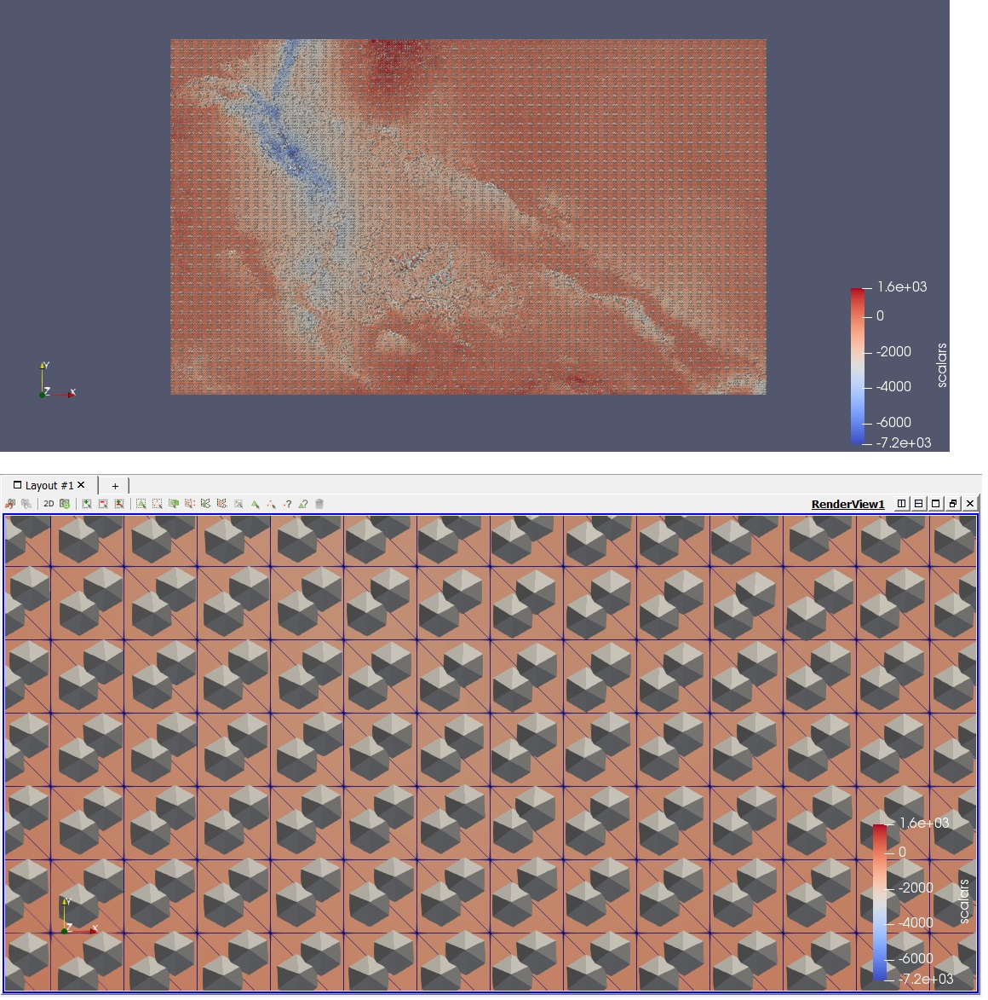
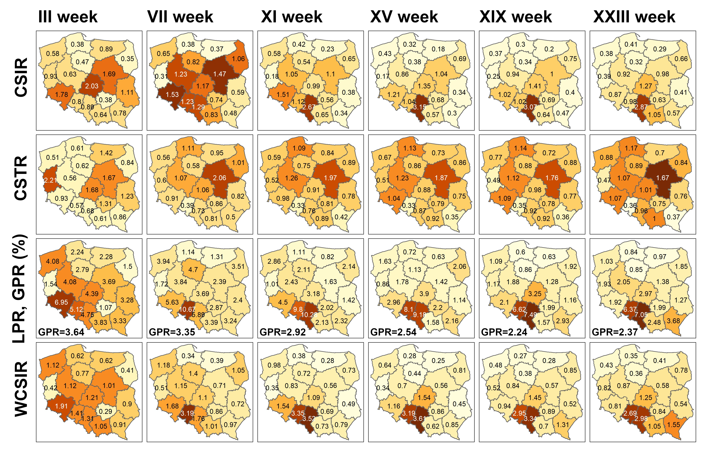

Details
Subsurface geological modelling
Machine-learning algorithms can be employed to identify homogenous subsets of orientations sampled throughout geologic horizons. Below you can find results for a Middle-Jurassic horizon within Kraków-Silesian Homocline, a geological unit with preferred dip direction to NE and subsidiary fault network. The second picture presents screenshot from ParaView for a data set covering Central European Basin System, since our computer code automatically creates files that can be uploaded there.
Spatial epidemiology
In July 2020, Luxembourg was declared a risk zone by many European countries, including Slovakia, Lithuania, Finland, Norway and Germany. The latter country used only the cases/inhabitants metric to render Luxembourg a risk zone. Since the measure used is biased by testing heterogeneity, countries with greater testing capabilities than others would be susceptible to being declared a risk zone. Indeed, one month later, the ban on Luxembourg was lifted by Germany and the justification was that Luxembourg had adopted a large-scale screening strategy. We proposed a risk measure (WCSIR) that is biased neither by variation in population size nor by the spatial heterogeneity of testing. It is relative in nature and it can be conceptualised either as weighting relative infection risk by relative intensity of testing or as normalising local positivity by global positivity. The proposed methodology was investigated for administrative and contiguous regions of Poland. However, it can easily be used for non-contiguous regions or countries provided that the data for the population, infection, and testing are available. We developed also a shinyApp to observe the epidemic dynamics over time. 
Ecclesiological dynamics
It is a historical fact that during 4th century trinitarian controversy, three competitive quasi-ecclesial (schismatic) factions emerged: Anomoeans (Heterousians), Homoiusians and Homoians. They competed with each other but also cooperated because they had a common enemy - bishop of Rome. However, it seems that in 21 century we also have a similar organism that deserves a thorough description and interpretation. Below you can find abstract of a planned article: "We discuss structural and dynamical properties of two ecclesiological organisms from the viewpoint of trinitarian ecclesiology with an eschatological perspective. We highlight mutual competition and cooperation between associated members. While the first aspect is understood as proposing competitive solutions to a theological problem, the second is conceptualized as fight against common enemy, that is the orthodox doctrine. The first organism relates to the 4th century Christological controversies with three factions that differed in their understanding of relationship between Father and Son. The second example refers to contemporary set of theological parties that promote competitive heuristics for achieving eternal life. These heuristics are contaminated by the sense of appropriation of divine authority, being thus detached not only from Catholic orthodoxy but also the Christian monotheism. In both organisms we observe the somewhat circular pattern in that the competition between factions is followed by their coalescence. Given a theological faction, this coalescence is understood as emergence of components that were typical for opposing factions. As such, we consider our study to be a starting point for including a dynamical perspective in the examination of singular ecclesiological organisms and for their critical assessment within the framework of trinitarian theology."
Raport końcowy – rozliczenie projektu 2020/37/N/ST10/02504 Realizacja projektu została oceniona POZYTYWNIE UWAGA! Ocena końcowa raportu jest uzgodnioną oceną Zespołu Ekspertów. Poniżej prezentowane są indywidualne stanowiska Ekspertów oceniających realizację projektu. W przypadku projektów, w których finansowanie wynosi do 1 mln zł raport oceniany jest przez jednego Eksperta, powyżej 1 mln zł przez dwóch Ekspertów. Różnica poglądów pojawiająca się w indywidualnych ocenach jest rzeczą naturalną i podlega uzgodnieniu podczas dyskusji nad oceną końcową raportu. Zespół ekspertów może pozostawić ocenę, zmienić ocenę lub przychylić się do opinii jednego z ekspertów. Przypominamy, że Eksperci oceniają indywidualnie realizację projektu na podstawie informacji znajdujących się wyłącznie w raporcie końcowym. Zespół Ekspertów może poprosić o przesłanie dodatkowych wyjaśnień/publikacji. Zwracamy również uwagę, że ustawodawca nie przewidział ścieżki odwoławczej dla oceny raportów końcowych. Ocena zgodności zakresu merytorycznego wykonanego projektu (wykonanych zadań badawczych, w tym zasadność dokonanych zmian) z umową projekt wykonany zgodnie z umową Ocena rangi naukowej wyników uzyskanych w trakcie realizacji projektu, z uwzględnieniem ich nowatorskiego charakteru i wpływu na rozwój dziedziny/dyscypliny naukowej Decyzja Zespołu Ekspertów: bardzo dobra Uzasadnienie: 24.09.2024 Po dyskusji Zespół Ekspertów zdecydował o podniesieniu oceny do bardzo dobrej. Ekspert 1: dobra Uzasadnienie: Głównym celem badań było opracowanie metody do wyznaczania odległości kątowych pomiędzy powierzchniami geologicznymi. Estymacja tych odległości była oparta na znanych metodach geostatystycznych. Zauważone różnice pomiędzy odległościami kątowymi a nieliniową zmiennością miąższości okazały się interesujące i warte są dalszych analiz. Znaczącym wynikiem projektu jest otwarte oprogramowanie, które umożliwia obliczanie odległości kątowych pomiędzy powierzchniami geologicznymi zarówno w programach open-source (np. QGIS), jak i w komercyjnych aplikacjach, takich jak Surfer. Badania mają w dużej mierze charakter aplikacyjny. Wykorzystane rozwiązania geostatystyczne są znane. Dlatego też, należy uznać, że wpływ w rozwój dziedziny w sensie stworzenia nowatorskiego warsztatu badawczego jest dobra. Ocena sposobu upowszechniania wyników uzyskanych w trakcie realizacji projektu (ranga czasopism/wydawnictw, referaty, komunikaty naukowe) Ekspert 1: bardzo dobra Uzasadnienie: Głównym celem badań było opracowanie metody do wyznaczania odległości kątowych pomiędzy powierzchniami geologicznymi. Estymacja tych odległości była oparta na znanych metodach geostatystycznych. Zauważone różnice pomiędzy odległościami kątowymi a nieliniową zmiennością miąższości okazały się interesujące i warte są dalszych analiz. Znaczącym wynikiem projektu jest otwarte oprogramowanie, które umożliwia obliczanie odległości kątowych pomiędzy powierzchniami geologicznymi zarówno w programach open-source (np. QGIS), jak i w komercyjnych aplikacjach, takich jak Surfer. Badania mają w dużej mierze charakter aplikacyjny. Wykorzystane rozwiązania geostatystyczne są znane. Dlatego też, należy uznać, że wpływ w rozwój dziedziny w sensie stworzenia nowatorskiego warsztatu badawczego jest dobra. Ocena zasadności wydatkowania środków w świetle uzyskanych wyników (koszty materiałowe, aparatura, wynagrodzenia) Ekspert 1: koszty zasadne Uzasadnienie: Środki zostały wydatkowane zgodnie z założeniami przedstawionymi we wniosku. Należy podkreślić, że wydatkowanie funduszy na konferencje, szkolenia i prezentacje było bardzo dobrze przemyślane. Tematyka badań była ściśle związana z tematyką konferencji, w których uczestniczył kierownik projektu. Ocena sposobu zarządzania danymi oraz udostępnienia wyników uzyskanych w trakcie realizacji projektu w ramach otwartego dostępu (open data) zgodnie z planem zarządzania danymi Ekspert 1: zadowalająca Uzasadnienie: Dostęp do danych geologicznych zebranych z jury środkowej w ramach projektu jest otwarty i bezpłatny dla wszystkich zainteresowanych. Część wyników projektu została opublikowana. Opracowane algorytmy obliczeniowe są udostępnione i mogą być wykorzystywane w darmowym oprogramowaniu. Rekomendacja Zespołu Ekspertów co do rozliczenia umowy ws. realizacji i finansowania projektu Uznanie umowy za wykonaną Uzasadnienie oceny raportu końcowego - PRELUDIUM Ekspert 1: Projekt został zrealizowany zgodnie z założeniami. Najważniejszym osiągnięciem jest opracowanie otwartego programu do przestrzennej analizy danych z odwiertów geologicznych, który umożliwia określenie odległości kątowych pomiędzy powierzchniami geologicznymi. Pomimo że uzyskane wyniki dotyczą Jury Krakowsko-Częstochowskiej, opracowane podejście ma charakter uniwersalny i może być zastosowane w podobnych analizach opartych na danych z odwiertów geologicznych. Rekomendacja Zespołu Stałego Uznanie umowy za wykonaną